Many simulators support non-ideal transformers (e.g. mutual inductor
in SPICE). An often used model consists of finite inductances and an
imperfect coupling (straw inductance). This model has three
parameters: Inductance of the primary coil 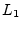, inductance of the
secondary coil  and the coupling factor 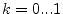.
and the coupling factor 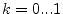.
This model can be replaced by the equivalent circuit depicted in figure 9.4. The values are calculated as follows.
| 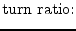 | 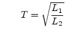 | (9.42) |
| 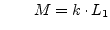 | (9.43) | |
| 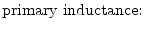 | 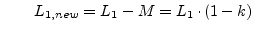 | (9.44) |
| 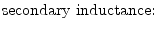 | 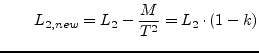 | (9.45) |
The Y-parameters of this component are:
| 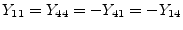 | 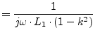 | (9.46) |
| 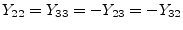 | 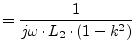 | (9.47) |
| 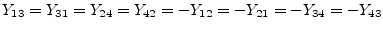 | 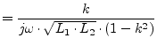 | (9.48) |
Furthermore, its S-parameters are:
| 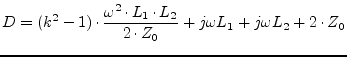 | (9.49) |
| 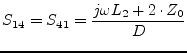 | (9.50) |
| 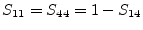 | (9.51) |
| 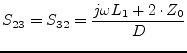 | (9.52) |
| 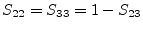 | (9.53) |
 |
(9.54) |
Also including an ohmic resistance  and
and  for each coil,
leads to the following Y-parameters:
for each coil,
leads to the following Y-parameters:
| 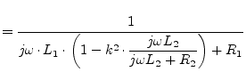 | (9.55) | |
| 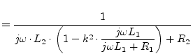 | (9.56) | |
| 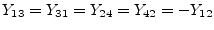 | 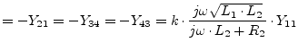 | (9.57) |
Building the S-parameters leads to too large equations. Numerically converting the Y-parameters into S-parameters is therefore recommended.
The MNA matrix entries during DC analysis and the noise correlation matrices of this transformer are:
| 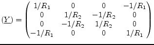 | (9.58) |
| 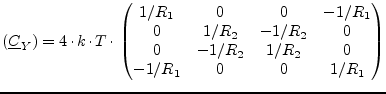 | (9.59) |
| 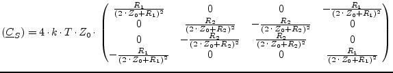 | (9.60) |
A transformer with three coupled inductors has three coupling factors
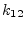, 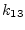 and  . Its Y-parameters write as follows
(port numbers are according to figure 9.3).
. Its Y-parameters write as follows
(port numbers are according to figure 9.3).
| 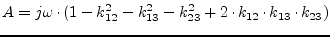 | (9.61) |
| 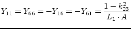 | (9.62) |
| 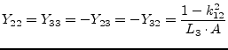 | (9.63) |
| 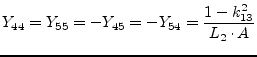 | (9.64) |
| 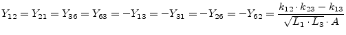 | (9.65) |
 |
(9.66) |
| 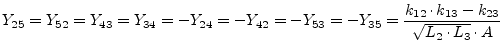 | (9.67) |
A more general approach for coupled inductors can be obtained by using the induction law:
| 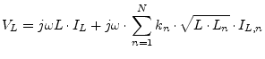 | (9.68) |
Realizing this approach with the MNA matrix is straight forward: Every
inductance  needs an additional matrix row. The corresponding
element in the 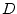 matrix is 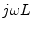. If two inductors are
coupled the cross element in the matrix is
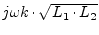. For two coupled inductors this yields:
needs an additional matrix row. The corresponding
element in the 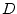 matrix is 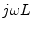. If two inductors are
coupled the cross element in the matrix is
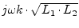. For two coupled inductors this yields:
| 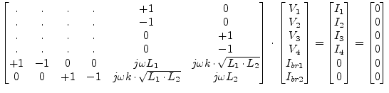 | (9.69) |
Obviously, this approach has an advantage: It also works for zero inductances and for unity coupling factors and is extendible for any number of inductors. It has the disadvantage that it enlarges the MNA matrix.
The S-parameter matrix of this component is obtained by converting the Z-parameter matrix of the component. The Z-parameter matrix can be constructed using the following scheme: The self-inductances on the main diagonal and the mutual inductances in the off-diagonal entries.
| 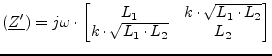 | (9.70) |
This matrix representation does not contain the second terminals of the inductances. That's why the Z-parameter matrix must be converted into the Y-parameter matrix representation which is then extended to contain the additional terminals.
| 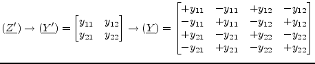 | (9.71) |